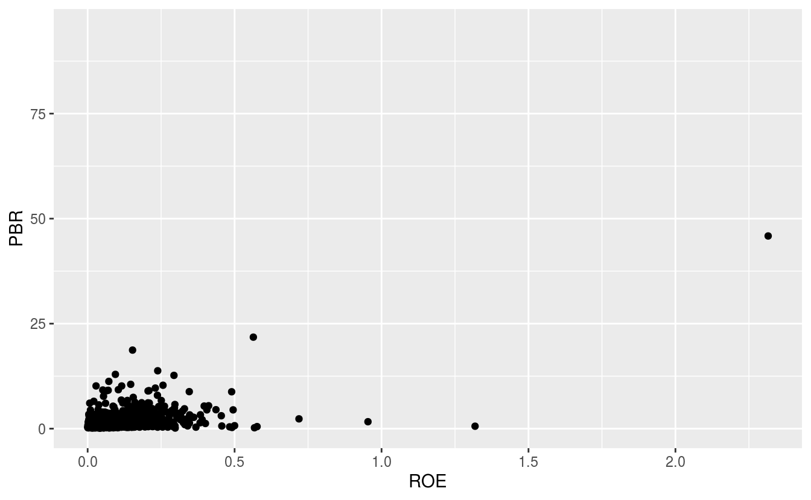
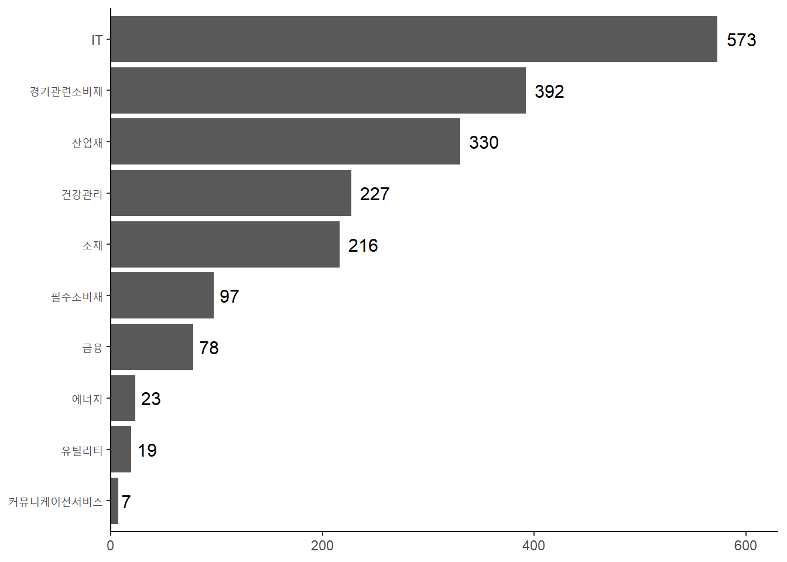

Chapter 8 데이터 분석 및 시각화하기
데이터 수집 및 정리가 끝났다면, 내가 가지고 있는 데이터가 어떠한 특성을 가지고 있는지에 대한 분석 및 시각화 과정, 즉 탐색적 데이터 분석(Exploratory Data Analysis)을 할 필요가 있습니다. 해당 과정을 통해 데이터를 더 잘 이해할 수 있으며, 극단치나 결측치 등 데이터가 가지고 있는 잠재적인 문제를 발견하고 이를 어떻게 처리할지에 대해 고민할 수 있습니다.
해당 장에서는 dplyr 패키지를 이용한 데이터 분석과 ggplot 패키지를 이용한 데이터 시각화에 대해 알아보도록 하겠습니다.
8.1 종목정보 데이터 분석
먼저 거래소를 통해 수집한 산업별 현황과 개별지표를 정리한 파일, WICS 기준 섹터지표를 정리한 파일을 통해 국내 상장종목의 데이터를 분석해보도록 하겠습니다.
library(stringr)
KOR_ticker = read.csv('data/KOR_ticker.csv', row.names = 1, stringsAsFactors = FALSE)
KOR_sector = read.csv('data/KOR_sector.csv', row.names = 1, stringsAsFactors = FALSE)
KOR_ticker$'종목코드' = str_pad(KOR_ticker$'종목코드', 6, 'left', 0)
KOR_sector$'CMP_CD' = str_pad(KOR_sector$'CMP_CD', 6, 'left', 0)먼저 각 파일을 불러온 후, 티커에 해당하는 종목코드와 CMP_CD 열을 6자리 숫자로 만들어 주도록 합니다.
이제 dplyr 패키지의 여러 함수들을 이용하여 데이터를 분석해보도록 하겠습니다. 해당 패키지는 데이터 처리에 특화된 패키지이며, C++로 작성되어 매우 빠른 처리속도를 자랑합니다. 또한 문법이 SQL과 매우 비슷하여, 함수들의 내용을 직관적으로 이해할 수 있습니다.
8.1.1 *_join: 데이터 합치기
두 테이블을 하나로 합치기 위해 *_join() 함수를 이용하도록 합니다. 해당 함수는 기존에 살펴본 merge() 함수와 동일하며, 합치는 방법은 그림 8.1과 표 8.1과 같이 크게 4가지 종류가 있습니다.

Figure 8.1: join 함수의 종류
| 함수 | 내용 |
|---|---|
| inner_join() | 교집합 |
| full_join() | 합집합 |
| left_join() | 좌측 기준 |
| right_join() | 우측 기준 |
이 중 데이터의 손실을 없애기 위해 full_join()을 사용하여 두 데이터를 합치도록 하겠습니다.
library(dplyr)
data_market = full_join(KOR_ticker, KOR_sector,
by = c('종목코드' = 'CMP_CD', '종목명' = 'CMP_KOR'))full_join() 함수를 이용해 KOR_ticker와 KOR_sector 데이터를 합쳐주도록 합니다. by 인자는 데이터를 합치는 기준점을 의미하며, x 데이터(KOR_ticker)의 종목코드와 y 데이터(KOR_sector)의 CMP_CD는 같음을, x 데이터의 종목명과 y 데이터의 CMP_KOR는 같음을 정의합니다.
8.1.2 glimpse(): 데이터 구조 확인하기
glimpse(data_market)## Observations: 2,044
## Variables: 30
## $ 종목코드 <chr> "005930", "000660", "005380", "068270", "051910",...
## $ 종목명 <chr> "삼성전자", "SK하이닉스", "현대차", "셀트리온", "LG화학", "신한지주",...
## $ 시장구분 <chr> "코스피", "코스피", "코스피", "코스피", "코스피", "코스피", "코스피", ...
## $ 산업분류 <chr> "전기전자", "전기전자", "운수장비", "의약품", "화학", "금융업", "운수장비...
## $ 현재가.종가. <int> 44200, 65400, 140000, 196500, 330500, 44900, 22000...
## $ 전일대비 <int> 300, 300, -1000, 500, -1000, 0, -500, -2500, -450...
## $ 시가총액.원. <dbl> 2.638644e+14, 4.761135e+13, 2.991355e+13, 2.521666...
## $ 일자 <chr> "2019-06-07", "2019-06-07", "2019-06-07", "2019...
## $ 관리여부 <chr> "-", "-", "-", "-", "-", "-", "-", "-", "-", "-",...
## $ 종가 <int> 44200, 65400, 140000, 196500, 330500, 44900, 22...
## $ EPS <chr> "6,461", "22,255", "5,632", "2,063", "19,217"...
## $ PER <chr> "6.84", "2.94", "24.86", "95.25", "17.2", "6....
## $ BPS <chr> "35,342", "64,348", "245,447", "19,766", "218...
## $ PBR <chr> "1.25", "1.02", "0.57", "9.94", "1.51", "0.6"...
## $ 주당배당금 <int> 1416, 1500, 4000, 0, 6000, 1600, 4000, 10000, 1000...
## $ 배당수익률 <dbl> 3.20, 2.29, 2.86, 0.00, 1.82, 3.56, 1.82, 3.92, 4....
## $ 게시물..일련번호 <int> 1456, 1408, 1450, 1595, 1536, 1538, 1593, 1495, 1452...
## $ 총카운트 <int> NA, NA, NA, NA, NA, NA, NA, NA, NA, NA, NA, NA, N...
## $ IDX_CD <chr> "G45", "G45", "G25", "G35", "G15", "G40", "G2...
## $ IDX_NM_KOR <chr> "WICS IT", "WICS IT", "WICS 경기관련소비재", "WICS 건...
## $ ALL_MKT_VAL <int> 376270891, 376270891, 141374708, 81157991, 71...
## $ MKT_VAL <int> 208452867, 35232402, 20042076, 16895164, 1516...
## $ WGT <dbl> 55.40, 9.36, 14.18, 20.82, 21.12, 17.55, 10.0...
## $ S_WGT <dbl> 55.40, 64.76, 14.18, 20.82, 43.84, 17.55, 24....
## $ CAL_WGT <int> 1, 1, 1, 1, 1, 1, 1, 1, 1, 1, 1, 1, 1, 1, 1, ...
## $ SEC_CD <chr> "G45", "G45", "G25", "G35", "G15", "G40", "G2...
## $ SEC_NM_KOR <chr> "IT", "IT", "경기관련소비재", "건강관리", "소재", "금융", "경...
## $ SEQ <int> 1, 2, 1, 1, 2, 1, 2, 1, 1, 3, 2, 2, 3, 1, 2, ...
## $ TOP60 <int> 2, 2, 12, 21, 6, 6, 12, 2, 6, 12, 21, 6, 2, 2...
## $ APT_SHR_CNT <dbl> 4716128215, 538721750, 143157685, 85980477, 4...glimpse() 함수는 데이터 내용, 구조, 형식을 확인하는 함수입니다. 기본 함수인 str()과 그 역할은 비슷하지만, tidy 형태로 결과물이 훨씬 깔끔하게 출력됩니다. 총 관측값 및 열의 갯수, 각 열의 이름과 데이터 형식, 앞부분 데이터를 확인할 수 있습니다.
8.1.3 rename(): 열 이름 바꾸기
head(names(data_market), 10)## [1] "종목코드" "종목명" "시장구분" "산업분류"
## [5] "현재가.종가." "전일대비" "시가총액.원." "일자"
## [9] "관리여부" "종가"data_market = data_market %>%
rename(`시가총액` = `시가총액.원.`)
head(names(data_market), 10)## [1] "종목코드" "종목명" "시장구분" "산업분류"
## [5] "현재가.종가." "전일대비" "시가총액" "일자"
## [9] "관리여부" "종가"rename() 함수는 열 이름을 바꾸는 함수로써,rename(tbl, new_name, old_name) 형태로 입력합니다. 위의 경우 시가총액.원. 열이름이 **시가총액*으로 변경되었습니다.
8.1.4 distinct(): 고유한 값 확인
data_market %>%
distinct(SEC_NM_KOR) %>% c() ## $SEC_NM_KOR
## [1] "IT" "경기관련소비재" "건강관리"
## [4] "소재" "금융" "커뮤니케이션서비스"
## [7] "산업재" "유틸리티" "에너지"
## [10] "필수소비재" NAdistinct() 함수는 고유한 값을 반환하며, 기본함수 중 unique()와 동일한 기능을 합니다. 데이터의 섹터 정보를 확인해보면, WICS 기준 10개 섹터 및 섹터 정보가 없는 종목인 NA 값이 있음이 확인됩니다.
8.1.5 select(): 원하는 열만 선택
data_market %>%
select(`종목명`) %>% head()## 종목명
## 1 삼성전자
## 2 SK하이닉스
## 3 현대차
## 4 셀트리온
## 5 LG화학
## 6 신한지주data_market %>%
select(`종목명`, `PBR`, `SEC_NM_KOR`) %>% head()## 종목명 PBR SEC_NM_KOR
## 1 삼성전자 1.25 IT
## 2 SK하이닉스 1.02 IT
## 3 현대차 0.57 경기관련소비재
## 4 셀트리온 9.94 건강관리
## 5 LG화학 1.51 소재
## 6 신한지주 0.6 금융select() 함수는 원하는 열을 선택해주는 함수이며, 원하는 열 이름을 입력하면 됩니다. 하나의 열 뿐만 아니라 다수의 열을 입력할 경우 해당 열들이 선택됩니다.
data_market %>%
select(starts_with('시')) %>% head()## 시장구분 시가총액
## 1 코스피 2.638644e+14
## 2 코스피 4.761135e+13
## 3 코스피 2.991355e+13
## 4 코스피 2.521666e+13
## 5 코스피 2.333077e+13
## 6 코스피 2.129156e+13data_market %>%
select(ends_with('R')) %>% head()## PER PBR IDX_NM_KOR SEC_NM_KOR
## 1 6.84 1.25 WICS IT IT
## 2 2.94 1.02 WICS IT IT
## 3 24.86 0.57 WICS 경기관련소비재 경기관련소비재
## 4 95.25 9.94 WICS 건강관리 건강관리
## 5 17.2 1.51 WICS 소재 소재
## 6 6.82 0.6 WICS 금융 금융data_market %>%
select(contains('가')) %>% head()## 현재가.종가. 시가총액 종가
## 1 44200 2.638644e+14 44200
## 2 65400 4.761135e+13 65400
## 3 140000 2.991355e+13 140000
## 4 196500 2.521666e+13 196500
## 5 330500 2.333077e+13 330500
## 6 44900 2.129156e+13 44900해당 함수는 다양한 응용기능도 제공합니다. starts_with()의 경우 특정 문자로 시작하는 열들을, ends_with()의 경우 특정 문자로 끝나는 열들을, contains()의 경우 특정 문자가 포함되는 열들을 선택해 줍니다.
8.1.6 mutate(): 열 생성 및 데이터 변경
data_market = data_market %>%
mutate(`PBR` = as.numeric(PBR),
`PER` = as.numeric(PER),
`ROE` = PBR / PER,
`ROE` = round(ROE, 4),
`size` = ifelse(`시가총액` >=
median(`시가총액`, na.rm = TRUE),
'big', 'small')
)
data_market %>%
select(`종목명`, `ROE`, `size`) %>% head()## 종목명 ROE size
## 1 삼성전자 0.1827 big
## 2 SK하이닉스 0.3469 big
## 3 현대차 0.0229 big
## 4 셀트리온 0.1044 big
## 5 LG화학 0.0878 big
## 6 신한지주 0.0880 bigmutate() 함수는 원하는 형태로 열을 생성하거나 가공하는 함수입니다. 위의 예제에서는 먼저 PBR과 PER열을 as.numeric() 함수를 통해 숫자 형태로 변경한 후, PBR을 PER로 나눈 값을 ROE 열에 생성합니다. 그 후, round() 함수를 통해 ROE 값을 반올림 해주며, ifelse() 함수를 통해 시가총액의 중앙값 보다 큰 기업의 경우 big, 아닐 경우 small 임을 size 열에 저장해줍니다.
이 외에도 mutate_*() 계열 함수에는 mutate_all(), mutate_if(), mutate_at() 처럼 각 상황에 맞게 쓸수있는 다양한 함수들이 존재합니다.
8.1.7 filter(): 조건을 충족하는 행 선택
data_market %>%
select(`종목명`, `PBR`) %>%
filter(`PBR` < 1) %>% head()## 종목명 PBR
## 1 현대차 0.57
## 2 신한지주 0.60
## 3 현대모비스 0.70
## 4 SK텔레콤 0.92
## 5 POSCO 0.47
## 6 KB금융 0.52data_market %>%
select(`종목명`, `PER`, `PBR`, `ROE`) %>%
filter(PBR < 1 & PER < 20 & ROE > 0.1 ) %>% head()## 종목명 PER PBR ROE
## 1 SK텔레콤 5.79 0.92 0.1589
## 2 LG 7.01 0.73 0.1041
## 3 롯데케미칼 5.56 0.69 0.1241
## 4 GS 5.30 0.56 0.1057
## 5 DB손해보험 7.19 0.84 0.1168
## 6 CJ제일제당 5.05 0.96 0.1901filter() 함수는 조건을 충족하는 부분의 데이터를 반환하는 함수입니다. 첫번째 예제와 같이 PBR이 1 미만인 단일 조건을 입력할 수도 있으며, 두번째 예제와 같이 PBR 1 미만, PER 20 미만, ROE 0.1 초과 등 복수 조건을 입력할 수도 있습니다.
8.1.8 summarize(): 요약 통계값 계산
data_market %>%
summarize(PBR_max = max(PBR, na.rm = TRUE),
PBR_min = min(PBR, na.rm = TRUE))## PBR_max PBR_min
## 1 106.4 0.19summarize() 혹은 summarise() 함수는 원하는 요약 통계값을 계산해 줍니다. PBR_max은 PBR 열에서 최대값을, PBR_min은 최소값을 계산해줍니다.
8.1.9 arrange(): 데이터 정렬
data_market %>%
select(PBR) %>%
arrange(PBR) %>%
head(5)## PBR
## 1 0.19
## 2 0.20
## 3 0.21
## 4 0.21
## 5 0.21data_market %>%
select(ROE) %>%
arrange(desc(ROE)) %>%
head(5)## ROE
## 1 1.3265
## 2 0.9533
## 3 0.7177
## 4 0.5843
## 5 0.5536arrange() 함수의 경우 선택한 열을 기준으로 데이터를 정렬해주며, 오름차순을 기준으로 정렬합니다. 내림차순으로 데이터를 정렬하고자 할 경우 arrange() 내에 desc() 함수를 추가로 입력해주면 됩니다.
8.1.10 row_number(): 순위 계산
data_market %>%
mutate(PBR_rank = row_number(PBR)) %>%
select(PBR, PBR_rank) %>%
arrange(PBR) %>%
head(5)## PBR PBR_rank
## 1 0.19 1
## 2 0.20 2
## 3 0.21 3
## 4 0.21 4
## 5 0.21 5data_market %>%
mutate(PBR_rank = row_number(desc(ROE))) %>%
select(ROE, PBR_rank) %>%
arrange(desc(ROE)) %>%
head(5)## ROE PBR_rank
## 1 1.3265 1
## 2 0.9533 2
## 3 0.7177 3
## 4 0.5843 4
## 5 0.5536 5row_number() 함수는 선택한 열의 순위를 구해줍니다. 기본적으로 오름차순 기준으로 순위를 구하며, 내림차순으로 구하고자 할 떄는 desc() 함수를 추가해주면 됩니다.
순위를 구하는 함수는 이 외에도 min_rank(), dense_rank(), percent_rank()가 있습니다.
8.1.11 ntile(): 분위수 계산
data_market %>%
mutate(PBR_tile = ntile(PBR, n = 5)) %>%
select(PBR, PBR_tile) %>%
head()## PBR PBR_tile
## 1 1.25 3
## 2 1.02 3
## 3 0.57 1
## 4 9.94 5
## 5 1.51 3
## 6 0.60 1ntile() 함수는 분위수를 계산해주며, n 인자를 통해 몇 분위로 나눌지를 선택할 수 있습니다. 해당 함수 역시 오름차순을 기준으로 분위수를 나눕니다.
8.1.12 group_by(): 그룹별로 데이터를 묶음
data_market %>%
group_by(`SEC_NM_KOR`) %>%
summarize(n())## # A tibble: 11 x 2
## SEC_NM_KOR `n()`
## <chr> <int>
## 1 <NA> 76
## 2 IT 574
## 3 건강관리 227
## 4 경기관련소비재 393
## 5 금융 79
## 6 산업재 332
## 7 소재 217
## 8 에너지 23
## 9 유틸리티 19
## 10 커뮤니케이션서비스 7
## 11 필수소비재 97group_by() 함수는 선택한 열 중 동일한 데이터를 기준으로 데이터를 묶어줍니다. 위의 예제에서는 섹터를 나타내는 SEC_NM_KOR 기준으로 데이터를 묶었으며, n() 함수를 통해 해당 그룹 내 데이터의 갯수를 구할 수 있습니다.
data_market %>%
group_by(`SEC_NM_KOR`) %>%
summarize(PBR_median = median(PBR, na.rm = TRUE)) %>%
arrange(PBR_median)## # A tibble: 11 x 2
## SEC_NM_KOR PBR_median
## <chr> <dbl>
## 1 유틸리티 0.47
## 2 금융 0.74
## 3 소재 0.76
## 4 에너지 0.9
## 5 산업재 0.92
## 6 커뮤니케이션서비스 0.93
## 7 필수소비재 0.98
## 8 경기관련소비재 1.10
## 9 IT 1.54
## 10 <NA> 1.82
## 11 건강관리 2.7위 예제는 섹터를 기준으로 데이터를 묶은 후, summarize()를 통해 각각의 섹터에 속하는 종목들의 PBR 중앙값을 구한 후, 정렬하였습니다.
data_market %>%
group_by(`시장구분`, `SEC_NM_KOR`) %>%
summarize(PBR_median = median(PBR, na.rm = TRUE)) %>%
arrange(PBR_median)## # A tibble: 27 x 3
## # Groups: 시장구분 [3]
## 시장구분 SEC_NM_KOR PBR_median
## <chr> <chr> <dbl>
## 1 코스피 유틸리티 0.455
## 2 코스피 금융 0.580
## 3 코스피 소재 0.69
## 4 코스피 에너지 0.76
## 5 코스피 경기관련소비재 0.77
## 6 코스피 산업재 0.825
## 7 코스피 필수소비재 0.84
## 8 코스닥 유틸리티 0.87
## 9 코스피 커뮤니케이션서비스 0.91
## 10 코스닥 소재 1.00
## # ... with 17 more rows위 예제는 시장과 섹터를 기준으로 데이터를 그룹화한 후, 각 그룹별 PBR 중앙값을 구하였습니다. 이처럼 그룹의 경우 하나만이 아닌 원하는 만큼 나눌 수 있습니다.
8.2 종목정보 시각화
R 내에서 기본적으로 제공하는 plot() 함수를 통해서도 시각화가 충분히 가능합니다. 그러나 데이터 과학자들에게 가장 많이 사랑받는 패키지 중 하나인 ggplot2 패키지의 ggplot() 함수를사용할 경우 훨씬 아름답게 그림이 표현 가능1하며, 다양한 기능들을 매우 쉽게 사용할 수도 있습니다.
ggplot() 함수는 플러스(+) 기호를 사용한다는 점과 문법이 다소 어색하다는 점 때문에 처음에 배우기가 쉽지는 않습니다. 그러나 해당 패키지의 근본이 되는 철학인 The Grammar of Graphics를 이해하고 조금만 연습해본다면, 충분히 손쉽게 사용이 가능합니다.

Figure 8.2: The Grammar of Graphics
ggplot2 패키지에 대해 더욱 공부하고 싶으신 분은, 해당 패키지의 제작자인 해들리 위컴의 책2을 추천드립니다.
library(ggplot2)
ggplot(data_market, aes(x = ROE, y = PBR)) +
geom_point()
ggplot()함수 내에 사용될 데이터인 data_market을 입력하며, aes 인자 내부에 x축은 ROE, y축은 PBR 열을 사용하도록 정의합니다geom_point()함수를 통해 산점도 그래프를 그려주도록 합니다. 원하는 그림이 그려지기는 하였으나, ROE와 PBR에 극단치 데이터가 존재하여 둘간의 관계가 잘 보이지 않습니다.
ggplot(data_market, aes(x = ROE, y = PBR)) +
geom_point() +
coord_cartesian(xlim = c(0, 0.30), ylim = c(0, 3))
이번에는 극단치 효과를 제거하기 위해 coord_cartesian() 함수 내에 xlim과 ylim, 즉 x축과 y축의 범위를 직접 지정해주도록 합니다. 극단치가 제거되어 데이터를 한 눈에 확인할 수 있습니다.
ggplot(data_market, aes(x = ROE, y = PBR,
color = `시장구분`, shape = `시장구분`)) +
geom_point() +
geom_smooth(method = 'lm') +
coord_cartesian(xlim = c(0, 0.30), ylim = c(0, 3))
ggplot()함수 내부 aes 인자에 color와 shape를 지정해주면, 해당 그룹 별로 모양과 색이 나타납니다. 코스피와 코스닥 종목들에 해당하는 데이터의 색과 점 모양이 다르게 표시할 수 있습니다.geom_smooth()함수를 통해 평활선을 추가해줄 수도 있으며, 방법으로 lm(linear model)을 지정해줄 경우 선형회귀선을 그려주게 됩니다. 이 외에도 glm, gam, loess 등의 다양한 회귀선을 그려줄 수 있습니다.
ggplot(data_market, aes(x = PBR)) +
geom_histogram(binwidth = 0.1) +
coord_cartesian(xlim = c(0, 10))
geom_histogram() 함수는 히스토그램을 나타내주며, binwidth 인자를 막대의 너비를 선택해줄 수 있습니다. 국내 종목들의 PBR 데이터는 좌측에 쏠려있고 오른쪽으로 꼬리가 긴 분포를 가지고 있습니다.
ggplot(data_market, aes(x = PBR)) +
geom_histogram(aes(y = ..density..),
binwidth = 0.1,
color = 'sky blue', fill = 'sky blue') +
coord_cartesian(xlim = c(0, 10)) +
geom_density(color = 'red') +
geom_vline(aes(xintercept = median(PBR, na.rm = TRUE)), color = 'blue') +
geom_text(aes(label = median(PBR, na.rm = TRUE), x = median(PBR, na.rm = TRUE)), y = 0.05,
col = 'black', size = 4, hjust = -0.5)
PBR 히스토그램을 좀 더 자세하게 나타내보도록 하겠습니다.
geom_histogram()함수 내에 aes(y = ..density..)를 추가해주어 밀도함수로 바꾸어주도록 합니다.geom_density()함수를 추가해 밀도곡선을 그려줍니다.geom_vline()함수는 세로선을 그려주며, xintercept 즉 x축으로 PBR의 중앙값을 선택해 줍니다.geom_text()함수는 그림 내에 글자를 표현해주며, label 인자에 원하는 글자를 입력해준 후 글자가 표현될 x축, y축, 색상, 사이즈 등을 선택할 수 있습니다.
ggplot(data_market, aes(x = SEC_NM_KOR, y = PBR)) +
geom_boxplot() +
coord_flip()
박스 플롯 역시 데이터의 분포와 극단치를 확인하기 좋은 그림이며, geom_boxplot() 함수를 통해 나타낼 수 있습니다.
- x축 데이터로는 섹터 정보, y축 데이터로는 PBR을 선택해 줍니다.
geom_boxplot()를 통해 박스 플롯을 그려줍니다.coord_flip()함수는 x축과 y축을 뒤집어 표현하게 해주며 x축에 PBR, y축에 섹터 정보가 나타나게 되었습니다.
결과를 살펴보면 유틸리티나 금융 섹터의 경우 PBR이 잘 모여있는 반면, IT나 건강관리 섹터 등은 매우 극단적인 PBR을 가지고 있는 종목이 존재합니다.
data_market %>%
filter(!is.na(SEC_NM_KOR)) %>%
group_by(SEC_NM_KOR) %>%
summarize(ROE_sector = median(ROE, na.rm = TRUE),
PBR_sector = median(PBR, na.rm = TRUE)) %>%
ggplot(aes(x = ROE_sector, y = PBR_sector,
color = SEC_NM_KOR, label = SEC_NM_KOR)) +
geom_point() +
geom_text(color = 'black', size = 3, vjust = 1.3) +
theme(legend.position = 'bottom', legend.title = element_blank())
앞에서 배운 데이터 분석과 시각화를 동시에 연결하여 사용할 수도 있습니다.
- 데이터 분석의 단계로
filter()를 통해 섹터가 NA가 아닌 종목을 선택합니다. group_by()를 통해 섹터 별 그룹을 묶습니다.summarize()를 통해 ROE와 PBR의 중앙값을 계산해줍니다. 해당 과정을 거치면 다음의 결과가 계산됩니다.
## # A tibble: 10 x 3
## SEC_NM_KOR ROE_sector PBR_sector
## <chr> <dbl> <dbl>
## 1 IT 0.0957 1.54
## 2 건강관리 0.0704 2.7
## 3 경기관련소비재 0.0634 1.10
## 4 금융 0.0896 0.74
## 5 산업재 0.0686 0.92
## 6 소재 0.0632 0.76
## 7 에너지 0.0612 0.9
## 8 유틸리티 0.0706 0.47
## 9 커뮤니케이션서비스 0.137 0.93
## 10 필수소비재 0.0696 0.98해당 결과를 파이프 오퍼레이터(%>%)로 이을 경우 그대로 시각화가 가능하며, ggplot() 함수 내에 데이터를 입력하지 않아도 됩니다.
- x축과 y축을 설정해준 뒤, 색상과 라벨을 섹터로 지정해주면 각 섹터 별로 다른 색상의 산점도가 그려지게 됩니다. 5.
geom_text()함수를 통해 앞에서 라벨로 지정한 섹터 정보들을 출력해줍니다. theme()함수를 통해 다양한 테마를 지정해주도록 합니다. legend.position 인자를 통해 범례를 하단에 배치하였으며, legend.title 인자를 통해 범례의 제목을 삭제해 주었습니다.
data_market %>%
group_by(SEC_NM_KOR) %>%
summarize(n = n()) %>%
ggplot(aes(x = SEC_NM_KOR, y = n)) +
geom_bar(stat = 'identity') +
theme_classic()
geom_bar()는 막대그래프를 그려주는 함수입니다.
- 먼저
group_by()를 통해 섹터 별 그룹을 묶어줍니다. summarize()함수 내부에n()을 통해, 각 그룹 별 데이터 갯수를 구합니다.ggplot()함수에서 x축에는 SEC_NM_KOR, y축에는 n을 지정해줍니다.geom_bar()를 통해 막대그래프를 그려주도록 합니다.y축에 해당하는 n 데이터를 그대로 사용하기 위해서는 stat인자를 ’identity’로 지정해주어야 합니다.theme_*()함수를 통해 배경 테마를 바꿀수도 있습니다.
한편 위 그래프는 데이터 갯수에 따라 순서대로 막대가 정렬되지 않아 보기에 좋은 형태는 아닙니다. 이를 반영하여 더욱 보기좋은 그래프로 나타내주도록 하겠습니다.
data_market %>%
filter(!is.na(SEC_NM_KOR)) %>%
group_by(SEC_NM_KOR) %>%
summarize(n = n()) %>%
ggplot(aes(x = reorder(SEC_NM_KOR, n), y = n, label = n)) +
geom_bar(stat = 'identity') +
geom_text(color = 'black', size = 4, hjust = -0.3) +
xlab(NULL) +
ylab(NULL) +
coord_flip() +
scale_y_continuous(expand = c(0, 0, 0.1, 0)) +
theme_classic()
filter()함수를 통해 NA 종목은 삭제해준 후, 섹터 별 종목 갯수를 구해주도록 합니다.ggplot()의 x축에reorder()함수를 적용하여 SEC_NM_KOR 변수를 n 순서대로 정렬해줍니다.geom_bar()를 통해 막대그래프를 그려준 후,geom_text()를 통해 라벨에 해당하는 종목 갯수를 출력합니다.xlab()과ylab()에 NULL을 입력해 라벨을 삭제해 줍니다.coord_flip()함수를 통해 x축과 y축을 뒤집어 줍니다.scale_y_continuous()함수를 통해 그림의 간격을 약간 넓혀줍니다.theme_classic()로 테마를 변경해줍니다.
결과를 보면, 종목수가 많은 섹터부터 순서대로 정렬되어 보기도 쉬우며, 종묵수도 텍스트로 표현되어 한 눈에 확인할 수 있습니다.
이처럼 데이터 시각화를 통해 정보의 분포나 특성을 한눈에 확인할 수 있으며, ggplot()을 이용할 경우 복잡한 형태의 그림도 매우 간단하고 아름답게 표현할 수 있습니다.